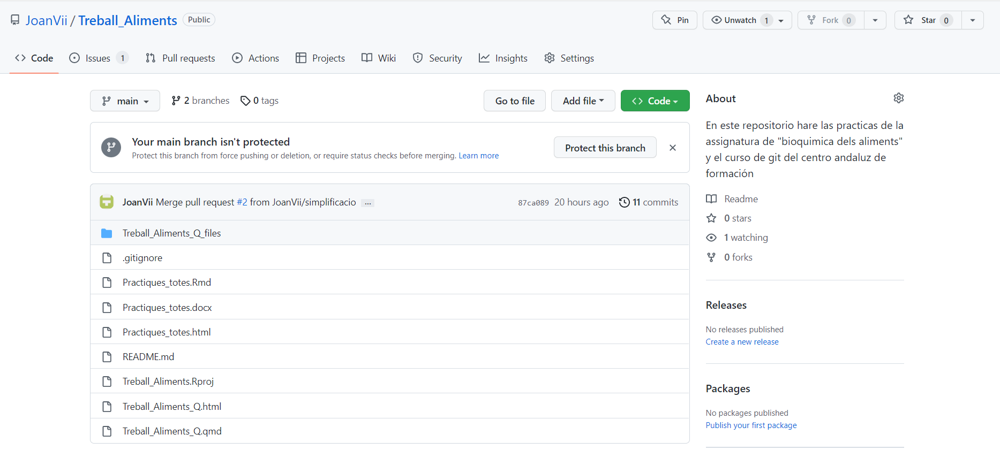
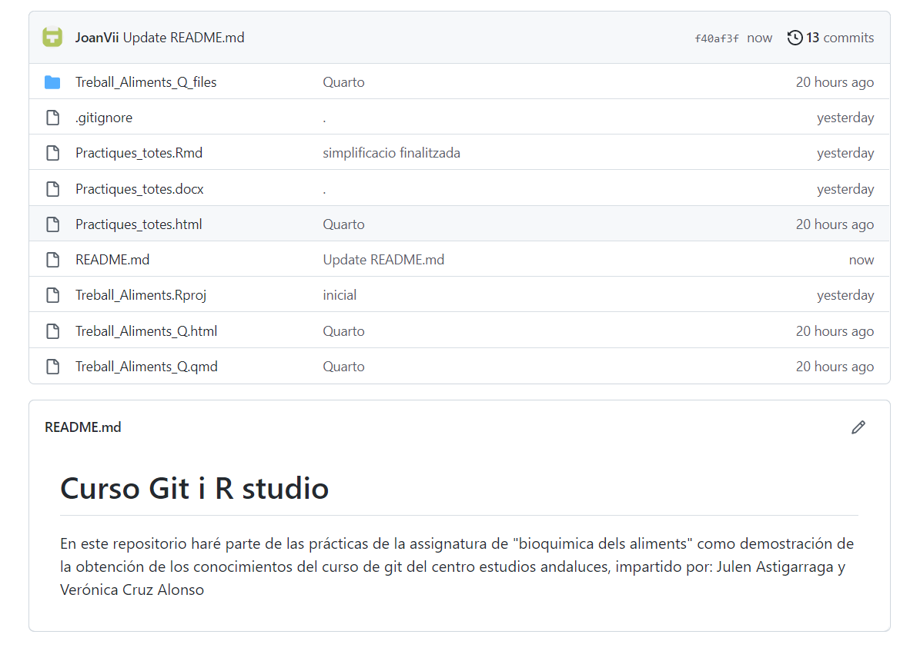
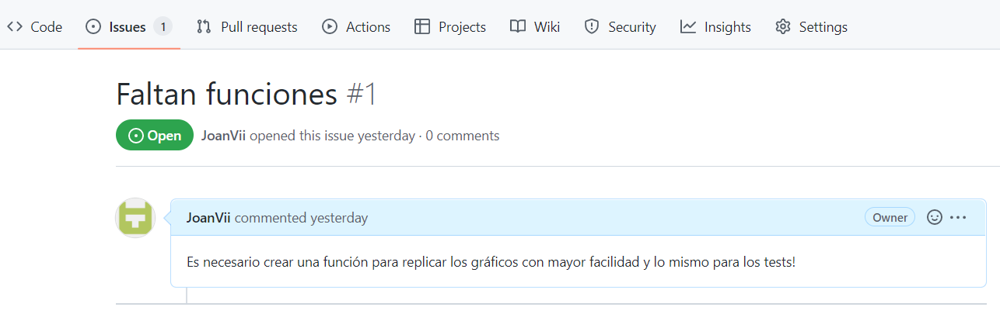
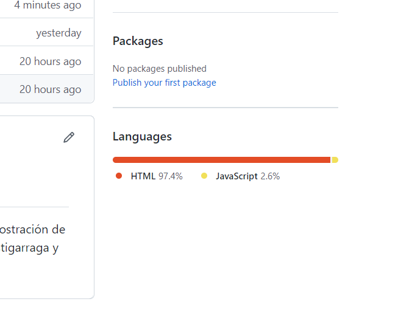
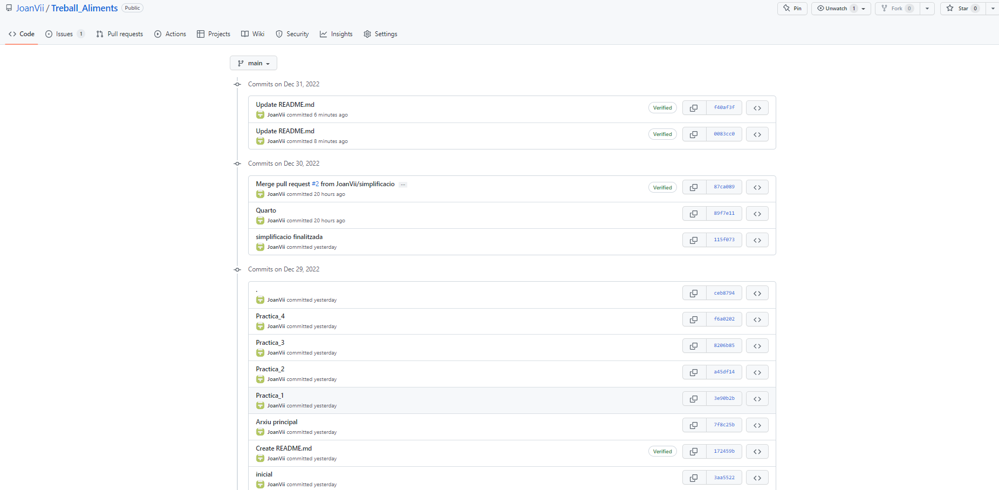

Presentación: Fundamentos de Git y GitHub
Repositorio
El repositorio donde está alojado el código es de github.com.

Concretament: https://github.com/JoanVii/Treball_Aliments
Readme
El documento README está en formato .md y se puede leer en el repostorio.

Issue
A modo de “issue” he comentado que faltan funciones para facilitar el flujo de trabajo.

Participantes
Desafortunadament, he hecho este proyecto solo así que no salen los colaboradores. Si hubiera saldrian debajo de los “Packages”.

Historial de commits
El historial de comits de la rama principal és:
